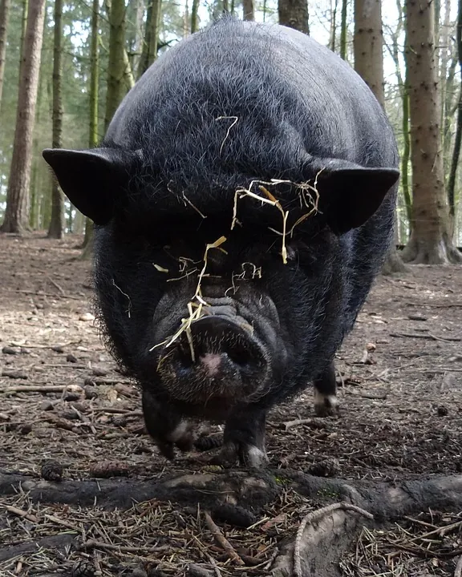
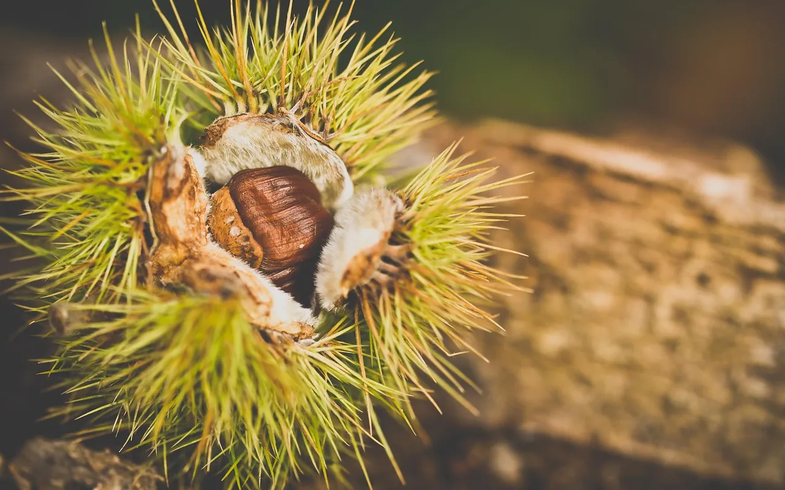
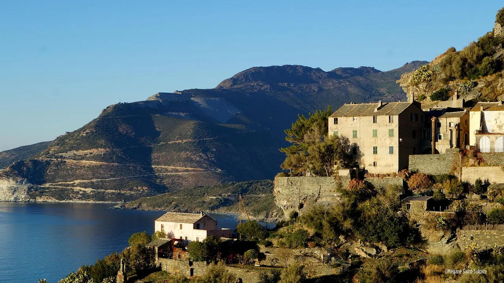
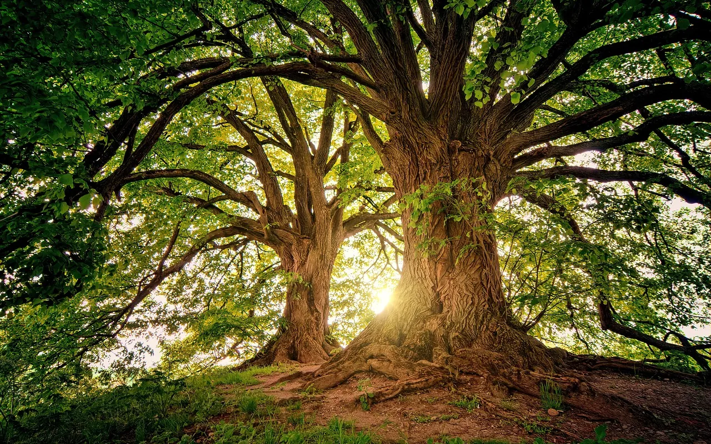
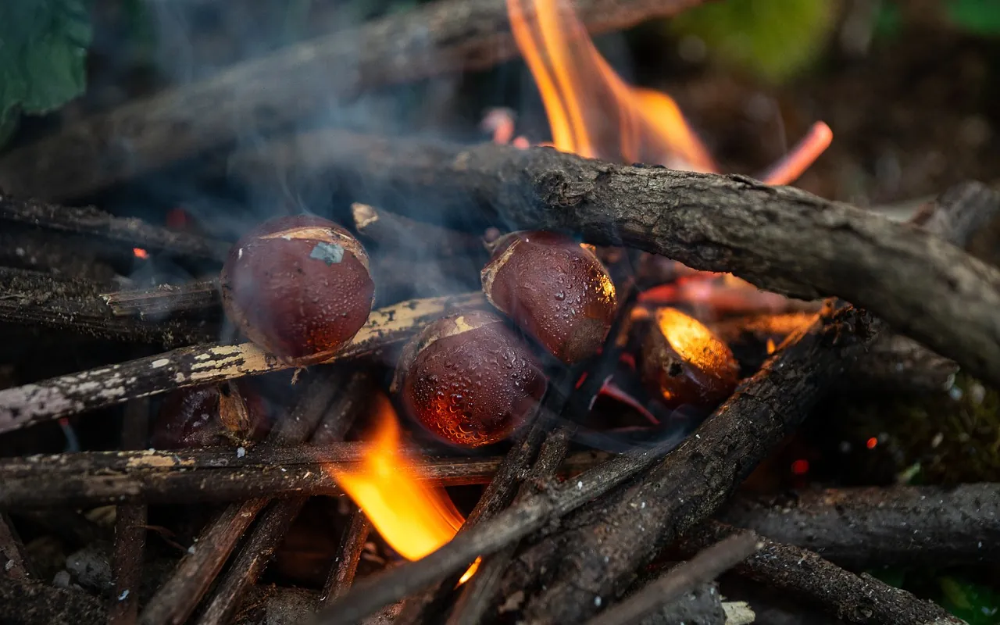

L'année à la ferme
Ce qu'on faitLes porcs dehors, le séchoir, la cave et le moulin, au rythme des saisons.
Où nous trouverÀ la ferme le samedi matin, et sur les marchés de Bastia et de Corte.
Charcuterie au feu de bois et farine de châtaigne, de nos porcs nustrale élevés dehors à Piedicroce.
Commander un colis

Sous les châtaigniers de Piedicroce, les porcs vivent dehors toute l'année.

En octobre, ils finissent aux châtaignes tombées : c'est le goût du nustrale.

Octobre : les châtaignes tombent. Les plus belles sont ramassées à la main, les autres restent aux porcs.
Dans la grataghja, le feu de châtaignier couve des semaines sous les pièces suspendues.

À la cave : quatre mois pour la coppa, un an pour le lonzu, deux ans pour le prisuttu.

En décembre, les châtaignes séchées passent à la meule du moulin du village.
Ce qu'on faitLes porcs dehors, le séchoir, la cave et le moulin, au rythme des saisons.
Où nous trouverÀ la ferme le samedi matin, et sur les marchés de Bastia et de Corte.
À la ferme le samedi matin, sur les marchés, ou en colis à retirer. Ce qui n'est pas de saison ce mois-ci est indiqué : il revient avec son mois.
Pas de vente en ligne : écrivez ou appelez, nous préparons votre colis pour le samedi suivant.

Des villages accrochés à la pente, des clochers dans la forêt, et des châtaigniers à perte de vue.


